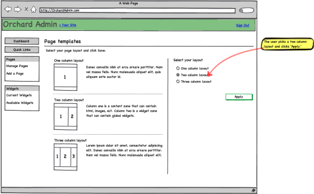
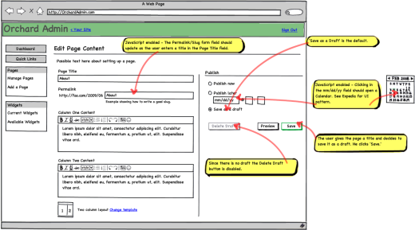
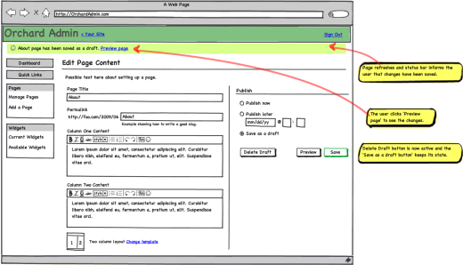
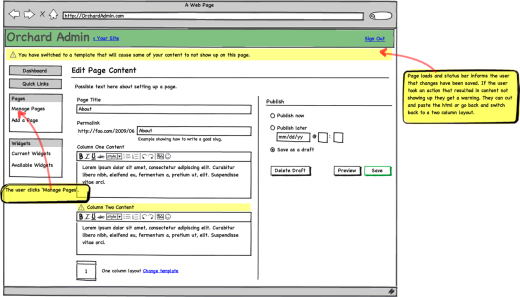
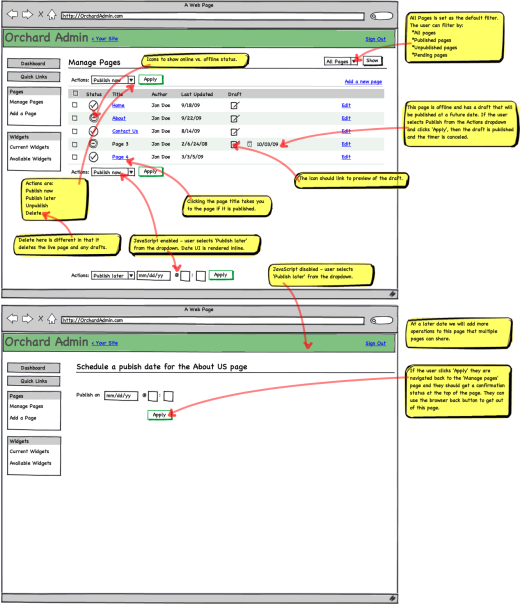

I can create an empty CMS page and give it a slug from the admin interface. I can then navigate to that page
The CMS module contributes a "Pages / Add new page" entry to the admin menu. As part of its initialization, each module will register its admin menu entries as a list of paths and associated action names.
Clicking that link brings the user to a screen where he can define the title and slug of the new page.
The created pages are empty: no widgets, no contents. They are an empty page with a slug and title.
I can find an existing page from the admin UI or from the front end and edit its properties
The admin UI has a list of pages with an edit button next to each. Getting to this page is done by clicking the "Pages" or "Pages / List of pages" menu entry that the module contributed.
From the front-end, when the user is logged in as an administrator, a toolbar appears at the bottom of the screen that has an "Edit Page" or "Page properties" button that takes him to the same back-end admin page as the list mentioned above.
From a page's admin page, the user can change the slug and title of the page (there will be additional properties as we implement more scenarios).
I can delete a CMS page
The back-end list of pages and the front-end admin toolbar have a delete button for each page. Clicking this button brings a confirm button, then deletes the page from the database.
When we have drafts, deleting a page deletes both the draft and published version if they exist. Similarly, when we have revisions, deleting a page also will delete all revisions.
Question: do we do a hard delete or a soft one? Or both? Do we have a waste bin like Windows and can you undelete? We won't implement those scenarios at first and will do a hard delete. Changing that will be easier when we have the versioning story.
I can enter contents for a page I created
The page editor exposes a rudimentary HTML editor (a.k.a. textbox) where I can enter HTML that will get rendered in "contents" zones on the page.
The page editor exposes an editor field for each content zone in the current template. The name of the zone is used as the title of the field.
We know that eventually, we'll have to handle different kinds of contents, so we build from the start so that the controller can specify what partial view to use to render contents. The model is the contents that this partial views will have to render.
So for a CMS page, the Model is a dictionary from zone names to HTML strings, and for a product if would be the product object. The results from an action can specify the content partial views to use, which are different from the view as a whole, which really is the layout template to use.
At this point, the view to use is the layout template for the page, while the partial views to render at the content placeholders specified by the template are what the controller decides, and the model is the content object (HTML strings for CMS pages).
The templates specify the content zones by calling into Html.IncludeZone(string zoneName). There can be any number of content zones on a page.
Note: when we introduce widgets back into the system, we will provide an overload to IncludeZone that takes a zone type, that type being Content (default) or Widget, or a widget chrome layout name.
Issue: if the number and names of content zones determines the number and names of content pieces that can be entered by the user, there is a possibility that content pieces can become orphaned if the user changes the template he's using after he built the page. Do we display the orphaned pieces as read-only (so users can still copy and paste to another content zone)? Do we display them at all? Do we still allow editing them? Do we provide an action to remove them?
Resolution: We don't throw that contents away or try to merge them. We also don't try to reassign if the zone names are different, even if the number of zones is the same. Instead, we display the following message in the top alert zone: "You have switched to a template that does not have the same content zones as the previous one, resulting in some of your contents not showing up on your site. You can either delete that contents or copy it into another zone." In the admin screen for the page, we show the orphaned contents with an alert "This contents is assigned to a zone that does not exist in the current template. Please delete it or copy it to another zone."
When the page is saved, we delete empty orphaned contents. By empty, we mean empty of contents, not necessarily empty string: <p></p> is empty contents. Warning, <img src="foo.gif"/> is not.
I can use a rich text editor to edit contents
When the browser can handle JavaScript, we replace the content editing text areas with rich text editors. We will start with TinyMCE, and this might become pluggable in the future. At first, we don't implement media management (even images are out of the picture at this point).
I can preview the draft version of an edited page before it's published
Many CMS only allow the user to modify the published version of the page. In this model, any modification is immediately visible to the world.
In Orchard, saving is a distinct operation from publishing. Editing a page should be doable in an incremental fashion where the user can save the page regularly, without affecting the published site. This is why all edits on the page are saved in draft form until the user chooses to explicitly publish the changes.
The page property screen has a "preview" button that opens the modified page in a new window. Clicking "preview" effectively creates a draft if one doesn't already exist.
When I edit or create a page, I can do so without affecting the publicly visible site
This is the draft feature where we store the modified version of the page in a separate database row from the published version.
The transitions between the states of a page is detailed here: CMS publication workflow.
I can choose a layout template for a CMS page
The layout template is the view that will be used to render the page. What template to use is stored with the page in the database. There is a default, default.aspx, to which we can fall back if the template is not found or if none was chosen. The drop-down for the choice of the template shows all the *.aspx files in the templates subdirectory of the views directory.
I can easily create my own layout template for the application
Any template file in the templates subdirectory of the view directory will be picked up by the system as a template that can be used by CMS pages.
I can delay the publication of a page
The page property screen has a "delayed publication" button that enables the user to choose the date and time at which the draft version will become the published version.
The UI do determine the status of the modified page gives a choice of:
- Draft
- Published
- Pending, with UI to pick a date and time for publication
Until the time the publishing date is reached, the new version of the page is only visible by administrators. Until then, the previously published version (if it exists) is what end-users see at that address on the site.
I can view the previous versions of my page and bring them back
Design pending. We might want to save any change as a different versions or only the published ones, or create a new version only when the user explicitly does so. Creating a new version every time the page is published could be a good balance between chattiness and safety.
Do we also envision an undo-like feature for the current draft where all changes are saved while editing a draft, but as soon as the page is published, we forget about that local history and just keep the latest as the new version and archive the currently published one? This might be way overkill at first (although pretty cool).
Another thing to consider is how we'll map that feature to contents other than CMS pages: it's easy for pages, but might be tougher on other types of contents.
I can restore the site into the state it was on a specific date
The admin UI enables the user to pick a date from the list of recent modifications. The user can preview the site at this date in a separate window. He can restore the state of the whole site to that date.
Issue: does that apply only to CMS pages or do we allow other modules to expose a similar feature so the whole site, across modules, can be rolled back in one operation? How common is this scenario?
I can define and add new widgets to the file system that are auto-discovered by the app, and made available when editing CMS pages
Widgets that are put in the Widgets directory of the application will be auto-discovered by Orchard and will then be displayed in the application's admin bar so that they can be added to zones of CMS pages.
My CMS pages display the widgets that have been configured at the application level
At first, we will implement only global widgets, and according to the Widgets.
Each template can expose one or several zones where widgets can be rendered. Adding a widget to one of these zones is done by going to the widgets page of the admin UI, choosing the zone to add the widget to, then clicking "add widget" from the list of widgets already in the zone.
I can move widgets within a zone to re-order them
Widgets can be reordered within a zone or moved from one zone to another.
Orchard provides me a number of useful widgets
Orchard should come with default widgets that can display navigation menus, plain contents or ads (Widgets will also enventually be available from an online catalog).
Here's a tentative list of the first widgets that we will implement:
- HTML contents
- Local navigation: displays the parent, peers and children of the current page
- Media
- Ads
- Poll
- RSS
- Social networks (share on FaceBook, Twitter, Digg, etc.)
- Tracking / stats
Widgets expose properties and the edit UI is generated automatically, along with handling of data persistence
If no admin view is provided by the widget, Orchard inspects the public properties of the widget class and generates a default admin UI to edit them. Orchard also handles the persistence of these settings into the database.
I can expose custom HTML for my widget's edit UI, handling the validation and data persistence myself
A widget may expose a specialized edit view to replace the default one that is generated from properties. Doing so is as simple as creating a file named following the convention [widgetname]-edit.ascx.
The widget can also override methods on the base widget class to handle validation and data persistence itself.
I can define specific zones in a template that can contain dynamic content widgets or sidebar widgets
The theme author or customizer goes into the page's code and adds a simple call to a helper function to insert a zone into a specific place on the page:
<div class="colleft fltleft">
<%= Html.IncludeZone("Left Sidebar"); %>
</div>
He also declares the zone name in the template manifest:
Name: Two-column layout
Zones: Left Sidebar, Contents
This is enough to define a zone.
I can customize the chrome that goes around the widgets
The HTML that goes before and after each widget can be customized by modifying user controls that follow a well-defined convention.
Some zones need to be rendered with different chrome because of the specific place in the template where they get rendered. For example, the center contents zone will typically have the most real estate on the page and will have widgets stacked vertically, whereas the horizontal menu zone below the header will be much smaller and horizontally stacked. Similarly, a sidebar will have medium width, unlimited height and will be stacked vertically.
The IncludeZone method has an optional parameter to specify what specific layout to use. The name of that layout is a convention that the theme author establishes that maps to a user control in the theme. If no layout is specified, we use a default layout, which is plain rendering based on UL/LI.
~/Views/Templates/TwoColumn.aspx
<html>
<head>
<link rel="stylesheet" type="text/css" href="stylesheet.css"/>
</head>
<body>
<div class="topNavigationZone">
<%= Html.IncludeZone("Top navigation", "HorizontalTable") %>
</div>
<div class="leftSidebarZone">
<%= Html.IncludeZone("Left sidebar", "VerticalList") %>
</div>
<div class="centerContentZone">
<%= Html.IncludeZone("Contents") %>
</div>
<div class="footerZone">
<%= Html.IncludeZone("Footer zone", "Div") %>
</div>
<%= Html.IncludeAdmin(); %>
</body>
</html>
~/Views/Layouts/VerticalList.ascx
<ul>
<% foreach (var widget in Widgets) { %>
<li><h4><%= widget.Title %></h4></li>
<li>
<% RenderPartial(widget.Content); %>
</li>
<% } %>
</ul>
~/Views/Layouts/HorizontalTable.ascx
<table><tr>
<% foreach (var widget in Widgets) { %>
<td><%= widget.Title %></td>
<td>
<% RenderPartial(widget.Content); %>
</td>
<% } %>
</tr></table>
~/Views/Layouts/Div.ascx
<% foreach (var widget in Widgets) { %>
<div><h4><%= widget.Title %></h4>
<% RenderPartial(widget.Content); %>
</div>
<% } %>
I can manage different widget sets (previously known as page groups) and apply them to my CMS pages
This might be a way of delaying or suppressing the need for local widgets. It avoids the complexity of a full local/global approach while allowing most of the common scenarios.
A possible design for this feature is to enable the user to override the default set-up by the template author on what each zone in the template does. The user would then be able to change a content zone to a widget zone using one of the widget sets:

I can choose a theme to override the default rendering
This is our existing theme feature. Themes can enrich the list of templates shown above. See Themes.
I can create new content types that can be configured and displayed in any CMS page
Design TBD when we have a second content type to add to the application (likely blog or media).
I can package my custom content type so other users can install it on their copy of the application
Design TBD.
I can install a new content type and start building pages using it
Design TBD.
Permissions
In this context, owner means the page owner when acting on a specific page, or the site owner otherwise.
| Permission | Anon. | Authentic. | Owner | Admin. | Author | Editor |
|---|---|---|---|---|---|---|
| View pages | Yes | Yes | Yes | Yes | Yes | Yes |
| Create & manage pages (implies all others) | No | No | Yes | Yes | Yes | No |
| Create draft pages | No | No | Yes | Yes | Yes | No |
| Modify/delete pages | No | No | Yes | Yes | Yes | No |
| Publish/unpublish/schedule pages | No | No | Yes | Yes | Yes | No |
Flows




Workflow:
| Published | Draft | Timer | Save button defaults to... |
|---|---|---|---|
| Yes | No | No | Publish Now |
| No | Yes | Yes | Publish Later |
| No | Yes | No | Save Draft |
| Yes | Yes | Yes | Publish Later |
| Yes | Yes | No | Save Draft |
| No | No | No | Save Draft |




